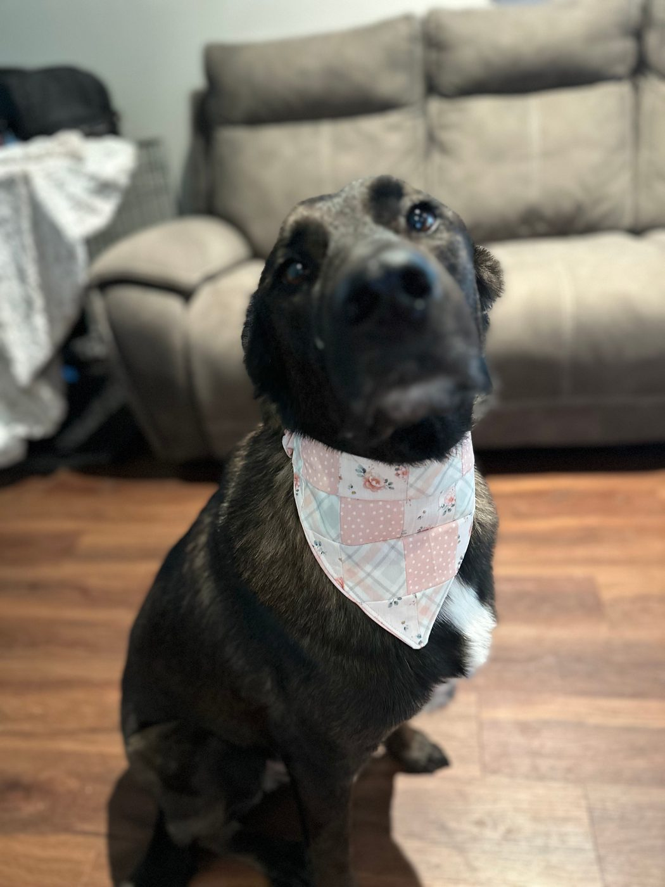
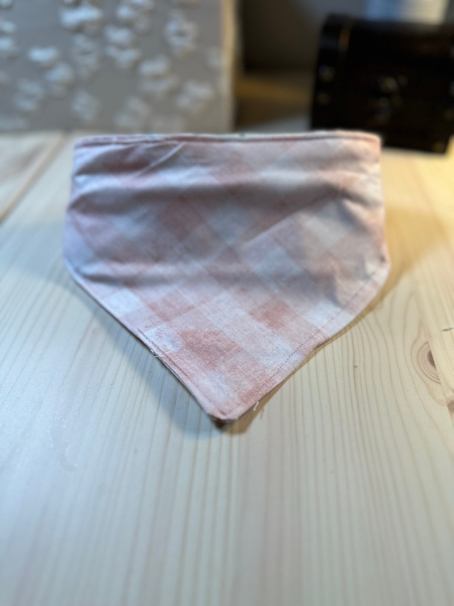

A lined kerchief with a gathered neck tube, so it pulls on over the head — no ties to knot and nothing that can tighten at the throat. Two pieces, every edge straight: the body is drawn with a ruler, and the tube is a single strip seamed into a sleeve with elastic run through it.


Measure the neck where the collar sits, snug but level. Between sizes, take the larger. The tube is 4″ wide in every size — only its length changes. The relaxed loop is the finished top edge plus the elastic; stretched, it is the top edge plus the full tube, which is what has to clear the dog's head.
| Size | Fits neck | Body, top × long | Sides | Tube | Elastic |
|---|---|---|---|---|---|
| XS | 8–11″ | 6½″ × 5½″ | 1″ | 4 × 11″ | 6¼″ |
| S · measured from a finished one | 11–14″ | 8″ × 7″ | 1¼″ | 4 × 14″ | 8″ |
| M | 14–18″ | 10½″ × 8½″ | 1¾″ | 4 × 17½″ | 10″ |
| L · drafted here | 18–22″ | 12″ × 10″ | 2″ | 4 × 22″ | 12½″ |
| XL | 22–26″ | 14″ × 12″ | 2½″ | 4 × 26″ | 14¾″ |
Written out at size L, for an 18 to 22″ neck — for any other size, swap in its numbers from the chart above and the steps stay identical. Every measurement includes the ½″ seam allowance, so cut exactly what the list says. Press your fabric first and cut with the long edges on the straight grain.
| Piece | Cut size | How many | What it becomes |
|---|---|---|---|
| A · Body | 12″ top edge × 10″ long, 2″ straight sides | Cut 2 | the kerchief — outer and lining |
| B · Tube | 4″ × 22″ | Cut 1 | the gathered neck tube |
| C · Elastic | ⅜″ wide × 12½″ | Cut 1 | lives inside the tube and gathers it |
Finished: front edge 11″ · drop about 8½″ · neck loop about 23½″ relaxed, stretching to about 32″
Lay the outer fabric flat, wrong side up. Rule a 12″ line for the top edge, then drop a 2″ line straight down at each end — those short sides keep the neck edge from collapsing. Mark the centre of the top edge and measure 10″ straight down from it: that is the point. Join each 2″ corner to the point, cut just inside your lines, then use the piece as a template for the lining.
Cut two strips 4″ × 18″ instead of the one tube, and leave the elastic out. Make each into a tube the same way, turn one short end of each inside itself and topstitch it closed, then attach the open ends to the two top corners exactly as in steps 9 and 10. That gives a long tie at each corner to knot in a loose bow at the side of the neck. Never at the throat, and take it off when the dog is unsupervised.